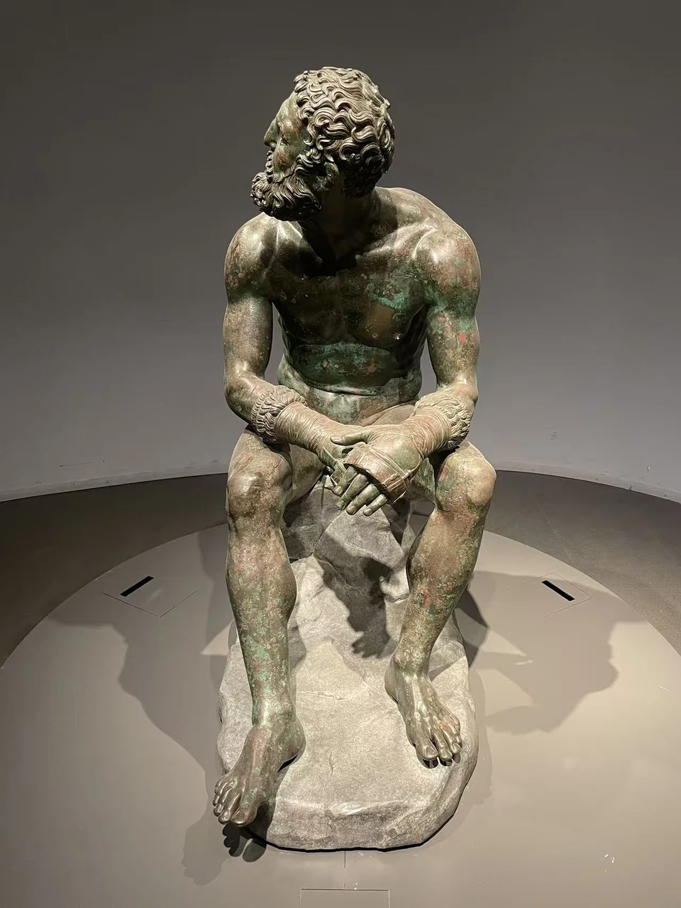
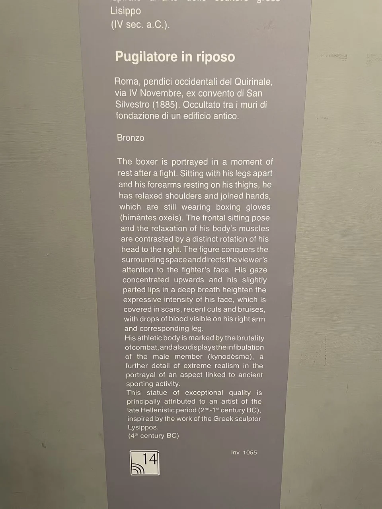

BRONZE / B11
休息的拳击手
肩背向前垂下，戴着拳套的双手停在膝间，头却转向旁边。休息的身体仍然保持着对周围的反应。

- 年代
- 通常置于希腊化晚期，具体年代有争议
- 材料
- 青铜
- 形制
- 运动员雕像
- 尺寸
- 高128厘米（馆方专题页）
- 收藏与观看
- 罗马国家博物馆 · 马西莫宫 · 罗马
- 馆藏号
- 1055
坐下以后，仍未完全放松
这不是伸臂庆祝的胜利瞬间。腿分开，躯干略向前，拳套压在近膝处；头的转动却打断了休息的对称。目光沿着肩、颈与脸移动时，静止中仍有一小段尚未结束的动作。
馆方说明，雕像以红铜表现伤口和血滴，使损伤不仅有凹凸，也曾有颜色。希腊化雕塑对疲惫、年龄和创伤的兴趣，在这里不是抽象的“写实”，而是落在拳手经历过训练与碰撞的身体上。 [16] [31]
不是一场已知比赛的结局
馆方专题把它放在希腊化晚期，倾向公元前1世纪前半；现场展签采用公元前2—1世纪。作品于1885年在奎里纳莱山东麓发现，附近的古代浴场环境也引出了原陈设用途的讨论。 [17]
雕像展示的疲惫不能单独证明他刚刚失败。它可能以理想化运动员承载竞技经验，也曾引出具体人物的识别尝试。先保留这个开放处，反而更容易看到它真正刻画了什么：受过伤、仍有力量、暂时坐下来的一具身体。 [17]
比赛的力量，留在停下来以后的身体里。
现场展签与背景说明

资料与来源
基本资料亦参见本页现场展签；照片中的细节与馆方解释分别叙述。